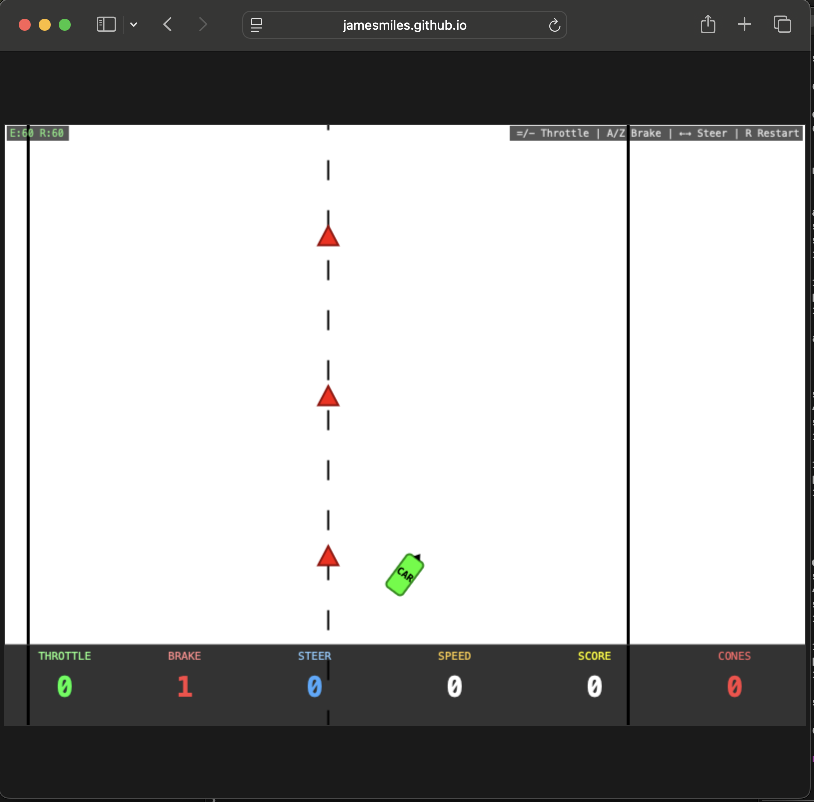

I created a slalom driving simulator and put Claude & Copilot behind the wheel.

Observations
The obvious problem is latency. In theory, the model could work around this by taking small, incremental steps — adjusting controls, observing the result, analysing, then deciding — before committing to the next move. In practice:
- Haiku 4.6 and GPT 5.4 mini started off by hitting the gas and running over all the cones.
- GPT 5.4 was the most cautious. It correctly made lots of small throttle movements and positioning changes, before systematically running over a cone it thought it was safely turning around.
- Opus and Sonnet kept turning off the track and crashing.
A few other things stood out:
- The models I tested struggle to correctly determine the direction the car is pointing. The HUD now includes a compass to help convey this information.
- Claude does not handle the fact that time keeps passing while it's thinking. GPT 5.4 seemed to handle this aspect better, applying brakes before launching into long-winded analysis.
You can try the simulator yourself here: jamesmiles.github.io/simple-driving-simulator
The prompt
You are an autonomous driving AI agent running on macOS. You have access to
the following tools:
- screencapture — capture the current screen state as an image
- osascript — osascript with AppleScript to send the key code directly to
System Events
You are playing a bird's-eye-view slalom driving simulator in the browser.
Controls:
- Throttle up: '=' key (increments by 1, range 0–10)
- Throttle down: '-' key (decrements by 1, range 0–10)
- Brake up: 'a' key (increments by 1, range 0–5)
- Brake down: 'z' key (decrements by 1, range 0–5)
- Steer left: Left arrow key (decrements by 1, range -10 to 10)
- Steer right: Right arrow key (increments by 1, range -10 to 10)
- Restart: 'r' key
Note on steering angle: left: -1 to -10, right: +1 to +10, centre = 0
All controls are incremental — each keypress adjusts the value by one step.
Steering angle persists until you change it.
Scoring:
- +10 points for passing through a gate (between consecutive cones)
- -10 points for hitting a cone (also voids the next gate)
- Driving off the road = FAIL
Objective: Navigate the course by weaving between the centre-line cones,
collecting as many gates as possible, and reaching the chequered finish line.
---
For each decision cycle, follow the AOAD loop:
1. Act — press one or more keys to adjust throttle, brake, or steering
2. Observe — capture the screen and examine the car's position, heading,
upcoming cones & HUD (including throttle, brake, steering settings)
3. Analyse — reason about:
- Where is the car relative to the road and the next gate?
- What steering angle & throttle is required?
- What is the current steering angle, throttle, and brake?
- Is a course correction needed?
- Is the speed appropriate for the upcoming road section?
4. Decide — apply the next control inputs, or halt and report if stuck
or failed
Driving strategy hints:
1. Due to the latency of the AOAD loop, you should not leave the throttle
applied
2. Each 'ACT' step should consist of a steering + throttle application for
n seconds before returning throttle to 0 and applying the brake.
3. The throttle sets a target speed (each level = 15 px/s), and the vehicle
accelerates toward it based on power.
4. The steering is not self-centring: if you press → → to introduce a +2
steering angle, to recentre to 0, you must press ← ←
---
Execution plan:
Step 1 — Open Chrome and navigate to:
https://jamesmiles.github.io/simple-driving-simulator/
Step 2 — Wait for the page to load, then take a screenshot to confirm the
game is visible
Step 3 — Press 'Enter' to play the game
Step 4 — Begin driving using the AOAD loop: observe the road, adjust
controls, and navigate through gates toward the finish line
Step 5 — Continue until the course is complete or you fail
Step 6 — If you fail and you think you can do better, try again
Comments